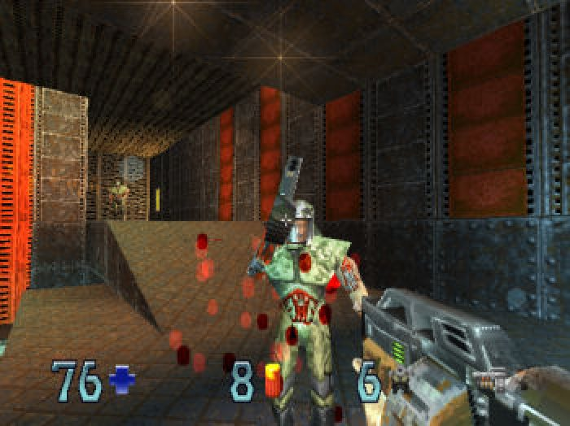
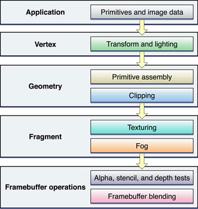
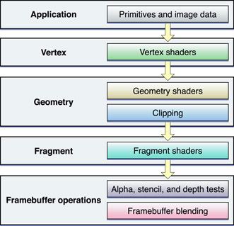
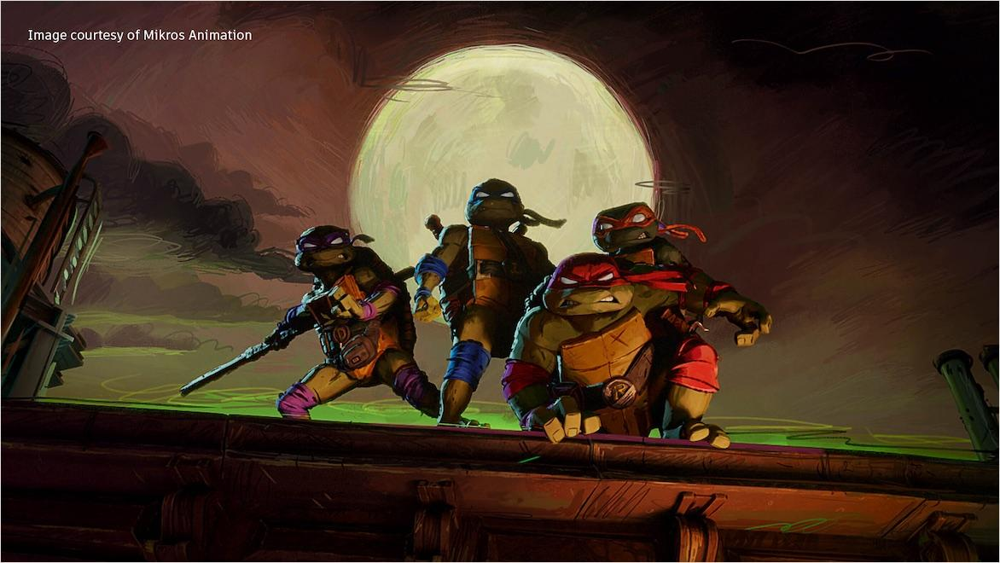

为什么现代图形程序要用“数据 + 程序”与 GPU 对话？

关键变化之一：GPU 从固定功能设备逐步演化为可编程并行计算设备。
CPU 与 GPU 之间至少需要约定哪些东西？先写三个关键词。
从“机器替你决定”到“开发者控制”。
Data + Program 是核心。
浏览器中的现代GPU图形接口。
drawSphere({
position:[0,0,0],
radius:1.0,
color:[1,0,0],
lighting:true
});简单，但功能由API预先决定。
buffer = createBuffer(data);
shader = createShader(code);
setBuffer(buffer);
setShader(shader);
draw();灵活，但需要理解数据与GPU程序。
从“易学、灵活、可扩展、性能、开发者控制力”五个维度比较 A/B。
答案不是继续增加更多“固定按钮”，而是：让核心处理过程可编程。
现代GPU的关键思想：开发者提供数据，也提供处理数据的程序。



共同点：它们不再受限于单一固定的“标准外观”。
| 阶段 | 关键变化 | 对编程的意义 |
|---|---|---|
| 早期 | CPU承担大量绘制计算 | 图形能力受通用处理器限制 |
| 专用图形硬件 | 逐步把光栅化、几何处理移到专用硬件 | 形成图形流水线 |
| 可编程Shader | 顶点/片元阶段开放给开发者编程 | 固定功能 → 可编程 |
| 统一Shader与GPGPU | 大量通用并行核心 | 图形与通用GPU计算逐渐融合 |
| 实时光追/AI加速 | 增加专用求交、矩阵/AI能力 | 现代渲染呈现混合架构 |
每次绘制都从应用程序逐项提交顶点/状态。
CPU调用和数据传输开销大
把顶点数组批量上传并保存在GPU资源中，重复绘制时直接复用。
更适合现代GPU高吞吐
引入GLSL，可编程Shader成为标准能力。
逐步弱化/移除旧立即模式与大量固定功能接口。
围绕可编程流水线构建更精简的接口。
历史的主线不是版本号，而是：把更多算法从API固定功能移到开发者Shader中。
顶点坐标
颜色
纹理坐标
Vertex Shader
Fragment Shader
自定义光照算法
变换矩阵
时间
Viewport / Depth Test
面向桌面端图形应用的标准 API，功能全面庞大，建立了现代可编程图形管线的基石。
针对移动端与嵌入式设备裁剪精简的规范，剥离冗余固定功能，全面转向纯 Shader 可编程处理。
基于 OpenGL ES 引入 HTML5 Canvas，使 JavaScript 能够直接调用 GPU 进行无插件硬件加速渲染。
这一家族演进的主线：并非简单的平台迁移，而是将算法与控制权从硬件固定功能彻底交还给开发者 Shader。
| 维度 | WebGL | 原生 OpenGL | 共同核心 |
|---|---|---|---|
| 语言 | JavaScript + GLSL ES | C/C++ + GLSL |
可编程流水线 Buffer Shader Draw Call |
| 平台 | 浏览器 | 原生应用 | |
| 窗口/输入 | HTML / Browser | 平台窗口库 | |
| 部署 | URL即可运行 | 通常需要本地构建 |
高层状态式API
显式资源与命令管理
现代低开销GPU API
Web上的现代GPU编程模型
API组织会变化，但本课程首先学习的核心不会变：数据、Shader、GPU资源和绘制流水线。
“请用一个生活中的例子解释固定功能流水线与可编程流水线。”
例如AI可能说“微波炉 vs 自己做饭”。问：GPU是否真的完全没有固定功能硬件？
现代图形API最重要的变化，是“GPU变快了”。
判断并说明：性能提升与编程模型变化是不是同一件事？
WebGL 与 OpenGL 的核心图形编程思想完全无关。
用 Data / Shader / Buffer 三个词说明。
简单封装与灵活控制之间存在权衡。
固定功能 → 可编程流水线。
Data + Program
WebGL 2 用来学习现代图形学原理。
Data → ________ Program → ________ GPU执行 → ________
再写一句：为什么现代API看起来比固定功能API更复杂，却更有价值？